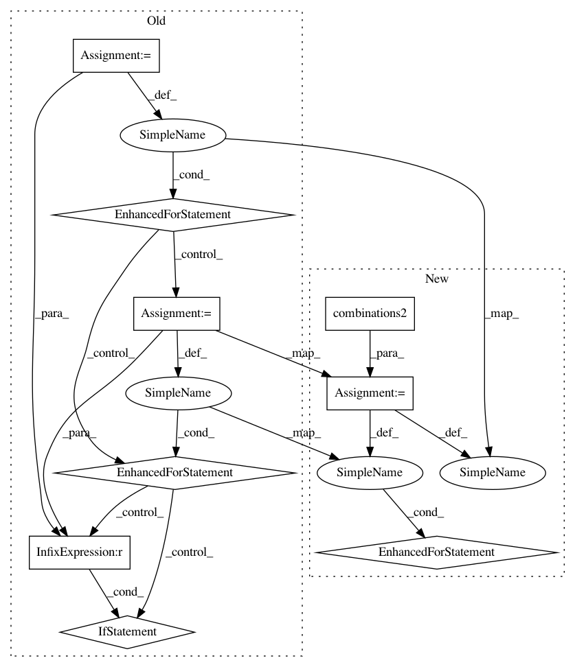

1e0683b3f5b56c53d9e75c9722e4adf7891d7361,lingpy/compare/partial.py,Partial,add_cognate_ids,#Partial#Any#Any#Any#Any#,486
Before Change
// get connected components
g = nx.Graph()
g.add_nodes_from(idxs)
for i, cogsA in zip(idxs, srcs):
for j,cogsB in zip(idxs, srcs):
if i < j:
if [x for x in cogsA if x in cogsB]:
g.add_edge(i, j)
for i,comps in enumerate(nx.connected_components(g)):
for comp in comps:
D[comp] = idx + i
idx += (i+1)
After Change
// get connected components
g = nx.Graph()
g.add_nodes_from(idxs)
for (i, cogsA), (j, cogsB) in combinations2(zip(idxs, srcs)):
if [x for x in cogsA if x in cogsB]:
g.add_edge(i, j)
for i,comps in enumerate(nx.connected_components(g)):
for comp in comps:
D[comp] = idx + i
idx += (i+1)
In pattern: SUPERPATTERN
Frequency: 3
Non-data size: 9
Instances
Project Name: lingpy/lingpy
Commit Name: 1e0683b3f5b56c53d9e75c9722e4adf7891d7361
Time: 2016-04-27
Author: mattis.list@uni-marburg.de
File Name: lingpy/compare/partial.py
Class Name: Partial
Method Name: add_cognate_ids
Project Name: lingpy/lingpy
Commit Name: 1e0683b3f5b56c53d9e75c9722e4adf7891d7361
Time: 2016-04-27
Author: mattis.list@uni-marburg.de
File Name: lingpy/compare/partial.py
Class Name: Partial
Method Name: partial_cluster
Project Name: lingpy/lingpy
Commit Name: fceb1968e44aa10654144aa0ca0a75adc46e13e2
Time: 2016-03-11
Author: xrotwang@googlemail.com
File Name: lingpy/meaning/colexification.py
Class Name:
Method Name: _get_colexifications